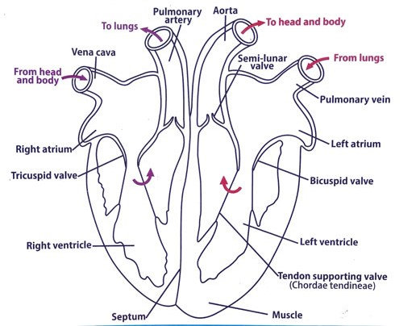

Diagram of the longitudinal section of mammalian heart
| Blood | Lymph |
|---|---|
| Red in colour. | White in colour |
| Blood contains red blood cells | Lacks red blood cells. |
| Contains platelets | Lacks platelets. |
| Contains less metabolic wastes | Contains more metabolic wastes |
| Contains less lymphocytes | Contains more lymphocytes |
| Flows to and away from the heart | Flows from tissues to the heart |
| Flows rapidly | Flows slowly |
| Flows due to the pumping action of the heart | Flows due to the contraction of skeletal muscles and the movement of the thoracic cavity |